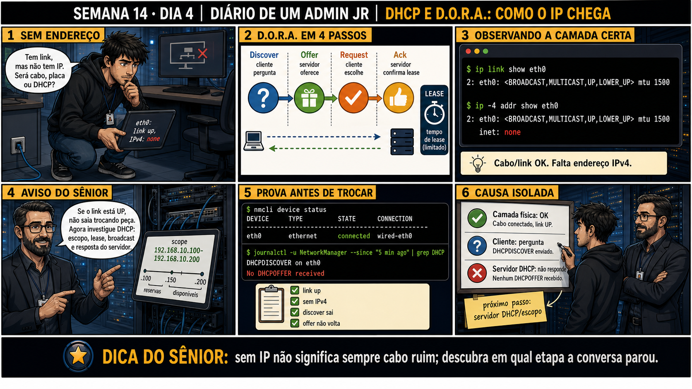

DIARIO DE UM ADMIN JR. | FASE 2 — REDES, DO IP AO DIAGNÓSTICO
🧠 Antes de começar — 20 segundos de memória (Dia 3)
1. Ontem o culpado não era o DNS nem o servidor — era um atalho local (/etc/hosts) numa única máquina. Sem olhar: qual comando revela esse atalho, que o dig sozinho nunca mostraria? 2. Hoje o sintoma é bem mais básico: nem chega a ter IP. Isso é DNS, ou é uma etapa anterior?
1.getent hosts — porque ele segue a ordem completa de resolução do sistema (/etc/nsswitch.conf), incluindo /etc/hosts, ao contrário do dig, que fala só com o DNS. 2. É uma etapa anterior: sem IP, o dispositivo nem consegue montar uma consulta DNS de verdade — hoje você desce um degrau, para o processo que dá o próprio endereço IP à máquina: o DHCP.
🔗 Conecta com a Semana 13: Você já sabe checar se uma interface tem IP (ip -br
addr). Hoje você aprende COMO esse IP chega até ela em primeiro lugar, quando ninguém configurou nada
manualmente — via DHCP, um processo de quatro passos com nome fácil de lembrar: D.O.R.A.
🔓 Privilégio de hoje: diagnosticar "sem IP" sem trocar peça no escuro. Você
ganha o método certo: se o link está UP mas não há IPv4, não troque cabo nem placa — investigue a conversa
DHCP (Discover → Offer → Request → Ack) e onde exatamente ela parou.
Semana 14 · Dia 4 | Nível Júnior — Redes
DHCP e D.O.R.A.
sem IP não significa sempre cabo ruim — descubra em qual etapa a conversa parou
ANTES DE ALTERAR, OBSERVE. DEPOIS DE ALTERAR, VALIDE.

1. O chamado
#6210PRIORIDADE ALTA07:55aberto por: usuário
host: workstation nova, eth0 · serviço: conectividade de rede
"Tem link, mas não tem IP. Será cabo, placa ou DHCP?"
A interface mostra link UP — o cabo funciona. Mas não tem endereço. O que isso já descarta, e o que ainda precisa ser investigado?
💡 Passa o mouse nas palavras destacadas pra ver uma dica rápida — clica se quiser a explicação completa com analogia.
2. O sênior te conta
Semana passada, outro ticket
Um técnico novo abriu o gabinete de uma estação sem IP achando que era placa de rede com defeito — antes
mesmo de olhar um único comando. Pedi pra ele rodar ip link show eth0 primeiro:
UP, com LOWER_UP presente — a camada física estava perfeita, cabo e placa funcionando.
O real problema apareceu em ip -4 addr show eth0: nenhum endereço configurado. Fui direto no
log: journalctl -u NetworkManager | grep DHCP mostrava "DHCPDISCOVER on eth0" seguido de "No
DHCPOFFER received". O cliente perguntou corretamente; ninguém respondeu. A causa estava no servidor
DHCP, não na estação — o switch tinha uma porta configurada numa VLAN sem servidor DHCP ativo.
O ponto que fica: "sem IP" não significa sempre cabo ruim. D.O.R.A. tem quatro etapas, e cada uma falha
de um jeito diferente — descobrir onde a conversa parou evita abrir gabinete ou trocar hardware à toa.
3. Decodificador de conceitos
Clica em qualquer termo pra ver a definição completa e uma analogia do dia a dia:
4. Ferramentas e leitura da evidência
Comando
O que confirma
ip link show eth0
Confirma se a camada física/link está UP.
ip -4 addr show eth0
Mostra se há endereço IPv4 configurado.
nmcli device status
Mostra o estado geral da conexão de rede.
journalctl -u NetworkManager | grep DHCP
Mostra as mensagens da negociação DHCP (Discover, Offer, Request, Ack).
$ ip link show eth0
2: eth0: BROADCAST,MULTICAST,UP,LOWER_UP mtu 1500
$ ip -4 addr show eth0
2: eth0: BROADCAST,MULTICAST,UP,LOWER_UP mtu 1500
inet: none
$ nmcli device status
DEVICE TYPE STATE CONNECTION
eth0 ethernet connected wired-eth0
$ journalctl -u NetworkManager --since "5 min ago" | grep DHCP
DHCPDISCOVER on eth0
No DHCPOFFER received
5. Laboratório guiado — marca conforme for testando
Segurança: execute os testes apenas em VM descartável e confirme nomes de discos, hosts e arquivos antes de cada comando.
Ação: confirme a camada física e o endereço IP na interface principal.
$ ip link show eth0
$ ip -4 addr show eth0
🔍 Detalhar esse comando
ip link show eth0
Mostra o estado da interface (UP/DOWN) — a camada física/link.
ip -4 addr show eth0
Mostra só os endereços IPv4 (-4) configurados na interface — aqui usado para confirmar se há IP obtido via DHCP.
Resultado esperado: link UP e um endereço IPv4 configurado (cenário normal).
Por quê: essa é a linha de base — sem ela, você não sabe diferenciar o cenário normal do cenário com falha que vem a seguir.
Cilada comum: pular direto pra investigar DHCP sem confirmar antes que o link está mesmo UP.
Ação: simule a falha desligando o serviço DHCP e solicitando um novo lease.
Cliente DHCP — negocia (ou renova) um endereço IP com um servidor DHCP na rede.
-r eth0
Modo release: libera explicitamente o IP atual da interface antes de pedir um novo — sem isso, o cliente às vezes tenta só renovar o lease antigo em vez de negociar do zero.
&& sudo dhclient eth0
Encadeamento: só solicita um novo lease depois que o release anterior terminar com sucesso — reproduz o ciclo DORA completo (Discover, Offer, Request, Ack) do zero.
Resultado esperado: DHCPDISCOVER enviado, mas sem DHCPOFFER — inet: none.
Por quê: reproduzir a falha de propósito é o que ensina a reconhecer o padrão "Discover sem Offer" num log real.
Cilada comum: esquecer de reiniciar o serviço DHCP depois do teste — a VM fica sem IP até você lembrar.
Se o seu resultado foi diferente
"Unit isc-dhcp-server.service not found" → o pacote não está instalado nessa VM ou a distro usa outro nome (ex: isc-dhcp-server em Debian/Ubuntu, dhcpd em Red Hat/CentOS). Instale com sudo apt install isc-dhcp-server ou adapte o nome do serviço. "dhclient: command not found" → em distros com NetworkManager, use nmcli device disconnect eth0 && nmcli device connect eth0 como alternativa pra forçar uma nova negociação.
Ação: confirme que o link continua UP mesmo sem IP.
$ nmcli device status
$ journalctl -u NetworkManager --since "2 min ago" | grep DHCP
🔍 Detalhar esse comando
nmcli device status
Mostra o estado geral de cada interface gerenciada pelo NetworkManager (connected, disconnected, etc.).
journalctl -u NetworkManager --since "2 min ago"
Filtra o log do systemd só para o serviço NetworkManager (-u), limitando aos últimos 2 minutos — evita rolar um log inteiro em busca do evento recente.
| grep DHCP
Isola, dentro desse log, só as linhas relacionadas à negociação DHCP (Discover, Offer, Request, Ack).
Resultado esperado: connected no nmcli, mas sem IP; log mostrando Discover sem Offer.
Por quê: ver "connected" e "sem IP" juntos é o que prova, na prática, que link UP e IP obtido são coisas independentes.
Cilada comum: ler só "connected" no nmcli e concluir que está tudo certo, sem checar o IP de fato.
🧑🏫 Aqui entra o Mentor (em breve): se o Offer chegar mas o processo travar depois (sem Ack), este é o ponto onde o chat com o Sênior-IA vai ajudar a diferenciar as causas possíveis dessa etapa específica.
Reativa o serviço de servidor DHCP, desligado de propósito no passo anterior para simular a falha.
dhclient eth0
Solicita um novo lease de IP na interface — dispara o ciclo Discover/Offer/Request/Ack completo.
Resultado esperado: Discover, Offer, Request, Ack completos; IP configurado.
Por quê: ver o ciclo completo funcionando depois de tê-lo visto falhar é o que fixa as quatro etapas na prática, não só na teoria.
Cilada comum: não confirmar o IP final com ip -4 addr show — o serviço pode estar rodando sem o cliente ter completado a negociação.
Ação: documente a camada física, a pergunta do cliente e a resposta do servidor.
# camada física: UP (confirmado por ip link)
# cliente: Discover enviado (confirmado por journalctl)
# servidor: sem Offer → causa isolada no lado do servidor
Resultado esperado: checklist claro com a causa isolada corretamente — reproduzindo o painel 6 da prancha de hoje.
Por quê: registrar a etapa exata (não só "sem IP, resolvido") é o que evita trocar hardware à toa da próxima vez que o mesmo padrão aparecer.
Cilada comum: anotar "problema de rede resolvido" sem registrar que era o servidor DHCP — outros dispositivos na mesma VLAN vão ter o mesmo problema sem ninguém notar o padrão.
6. Antes de ver as opções — tenta responder
🧠 Recall ativo: o que significa D.O.R.A., e em qual ordem os quatro passos acontecem?
Discover
(cliente pergunta) →
Offer
(servidor oferece) →
Request
(cliente escolhe/pede) →
Ack
(servidor confirma). Cada etapa pode falhar de forma diferente — por isso o diagnóstico precisa
identificar ONDE a conversa parou.
QUESTÃO 1 de 3
7. Questão comentada — clica numa alternativa
ip link show eth0 mostra UP. ip -4 addr show eth0 mostra inet: none. journalctl
mostra "DHCPDISCOVER on eth0" seguido de "No DHCPOFFER received". Qual é a leitura correta e o próximo
passo?
💡 Analogia do Sênior para Fixar: O ciclo D.O.R.A. do DHCP é a negociação na recepção do hotel: o hóspede grita na porta procurando quarto (Discover), a recepção oferece a chave (Offer), o hóspede aceita (Request) e a recepção confirma a reserva no livro (Acknowledge).
QUESTÃO 2 de 3 — cenário de erro real
7.1 Você confirmou: camada física OK, cliente enviou Discover, servidor não respondeu com Offer
O painel 6 da prancha de hoje resume: causa isolada, próximo passo é investigar o servidor/escopo DHCP.
Por que separar "camada física OK" de "servidor não respondeu" evita um
diagnóstico errado?
💡 Analogia do Sênior para Fixar: DHCP NAK (Negative Acknowledge) é a recepção dizendo que aquela chave não é sua: força o cliente a descartar o IP antigo e reiniciar o processo de descoberta do zero.
QUESTÃO 3 de 3 — detalhe que confunde todo iniciante
7.2 "Se o link está UP, isso já garante que o dispositivo vai conseguir um IP?"
Um colega, vendo link UP, assume que a única coisa que falta é "esperar um pouco mais".
Por que link UP não garante que um IP será obtido?
💡 Analogia do Sênior para Fixar: Dois servidores DHCP na mesma rede sem sincronização são duas recepcionistas entregando a mesma chave para pessoas diferentes: causa imediata de conflito de IP.
8. Procedimento profissional
Ao ver "sem IP", primeiro confirme a camada física com ip link show.
Se o link estiver UP, investigue a negociação DHCP, não o cabo.
Use journalctl (ou log equivalente) pra ver em qual etapa do D.O.R.A. a conversa parou.
Se o Discover saiu mas nenhum Offer voltou, investigue o lado do servidor DHCP.
Documente a etapa exata da falha, sem trocar hardware sem necessidade.
Prevenção
Antes de abrir gabinete ou trocar hardware por "sem IP", rode sempre ip link show primeiro
— se estiver UP, a causa quase certamente está na negociação DHCP, não na física. Esse passo evita trabalho
desnecessário e ajuda a decidir rápido pra qual lado escalar.
9. Validação e encerramento
A camada física foi confirmada como OK antes de suspeitar de cabo ou placa.
A negociação DHCP foi investigada via log, identificando a etapa exata da falha.
Nenhuma peça foi trocada sem evidência de que o problema era físico.
A causa foi isolada corretamente entre cliente e servidor.
Rollback e limites
Os comandos de diagnóstico (ip link, ip addr, nmcli, journalctl) são de leitura,
sem risco. dhclient -r libera o lease atual — reversível solicitando um novo lease em seguida. O cuidado
real é não trocar hardware físico baseado em suposição, sem confirmar via log qual etapa realmente falhou.
💡 Sobre repetição espaçada: "não troque peça no escuro, investigue por
etapa" conecta com a Semana 5 (disco lento ≠ disco cheio, investigar antes de agir) — mesma disciplina
aplicada a rede. O Anki vai conectar os dois.
10. Resposta final
Alternativa correta: A. Nesta aula, a leitura certa foi camada física
OK, Discover enviado mas sem Offer — investigar o servidor DHCP. O ponto central do caso é este: sem IP
não significa sempre cabo ruim; descubra em qual etapa a conversa parou.
🔓 O que você desbloqueou hoje
Capacidade de diagnosticar uma falha de DHCP identificando exatamente em qual
das quatro etapas (D.O.R.A.) a conversa parou. Amanhã fecha a Semana 14: renovação de lease, acompanhamento
de log em tempo real, e um diagnóstico mais avançado — escopo DHCP cheio.